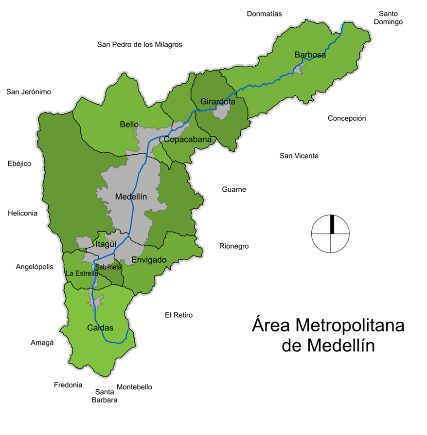

Estrategia de transferencia del conocimiento para programas de formación técnica y tecnológica asociados a las TIC que implementan la modalidad dual en Medellín

Pregunta de investigación:
¿Cómo se puede diseñar una estrategia de transferencia de conocimiento que fomente buenas prácticas y apoye la implementación de programas de formación dual en el campo de las Tecnologías de la Información y la Comunicación (TIC) en el contexto educativo de Medellín?
